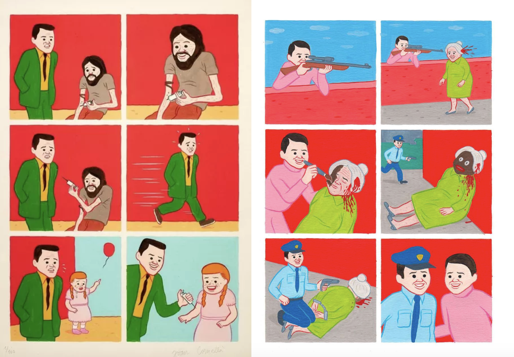
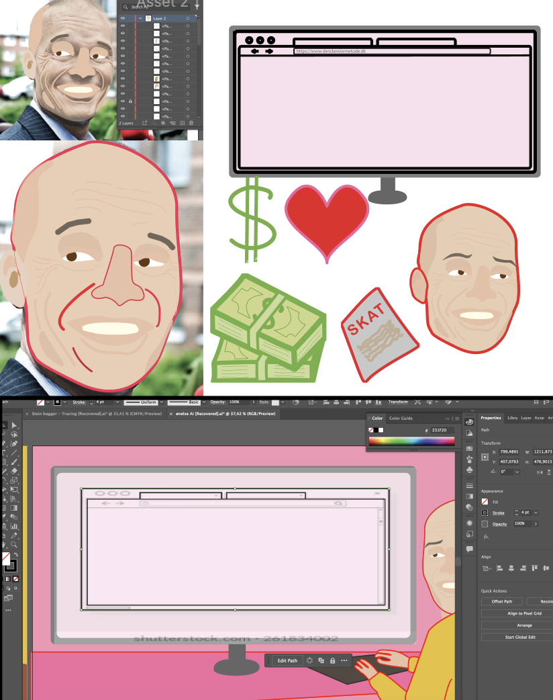
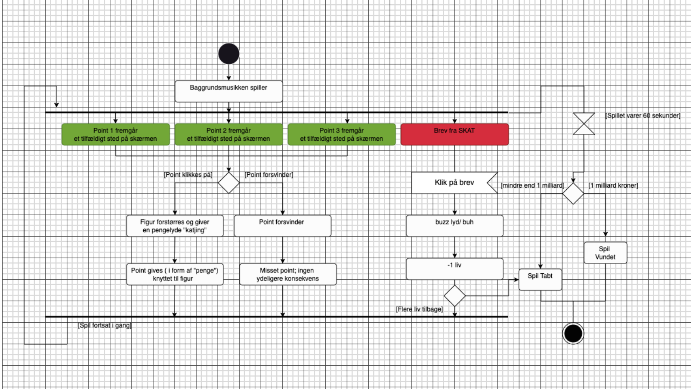

BACK
BASIC ANIMATION
In this theme, we are truly introduced to Javascript as we design and program our own game.
We have been presented with a variety of styles from which to choose for designing our game elements and characters. I opted for the Spanish illustrator Joan Cornellà Vázquez, known for his satirical comics
Designing elements
The game carries the satirical content of Joan Cornellà. The focal point of the game is Stein Bagger, known for a million-dollar fraud. In a given time, players must collect money and avoid taxes.
Game elements are designed in Adobe Illustrator. I created a stencil of Stein Bagger by drawing him based on a well-known press photo. Other elements are traced from sketches i drew in hand.
Activity Diagram
An activity diagram visually presents a series of actions. n this case, it illustrates the structure of the game, detailing what a specific action triggers or overlays
